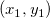
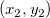
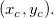
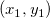
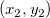
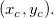
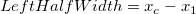
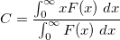

| Anzahl der zu integrierenden Bereiche |
Verwenden Sie diese Option, um die Anzahl der Peaks festzulegen, die integriert werden sollen. Wenn Alle Peaks aktiviert sind, können Sie die Anzahl der integrierenden Bereiche nicht bearbeiten. Deaktivieren Sie das Kontrollkästchen und geben Sie eine Zahl (N) ein. Nur die ersten N Peaks werden integriert. |
| Integrationsfensterbreite |
Verwenden Sie dies, um die Breite des Integrationsfensters zu bestimmen.
- Automatisch: Das Hilfsmittel Peaks analysieren legt automatisch die Breite des Integrationsfensters fest. Die Breite variiert je nach Peak.
-
Anpassen auf Vorschaudiagramm: Dies ermöglicht es Ihnen, die Integrationsrechtecke im Diagramm zu bewegen, um die Breite und Position des Integrationsfensters anzupassen. Beachten Sie, dass Sie mit einem Rechtsklick auf das Integrationsrechteck im Vorschaudiagramm drei Optionen erhalten:
-
- Skalieren: Durch Wählen dieser Option wird ein Dialog geöffnet, in den Sie die X-Eingabewerte eingeben können, um den Integrationsbereich genau an den Bildschirm anzupassen. Angenommen, Sie möchten die Integration z. B. genau von 1,0 bis 1,3 durchführen. Dann können Sie 1 in das Bearbeitungsfeld X1 und 1,3 in das Bearbeitungsfeld X2 eingeben.
- Breite für alle Peaks anwenden: Die Breite der linken Hälfte des aktuellen Peaks und die rechte Hälfte des Integrationsrechtecks werden auf die anderen Peaks angewendet.
- Als feste Breite für alle Peaks festlegen: Die Breite der linken Hälfte des aktuellen Peaks und die rechte Hälfte des Integrationsrechtecks werden auf die anderen Peaks angewendet. Es wird auch Breite für alle Peaks festlegen in der Gruppe Integrationsfensterbreite ausgewählt.
- Breite für alle Peaks festlegen
- Hiermit können Sie die Halbe Breite links und die Halbe Breite rechts des Integrationsfensters für alle Peaks festlegen. Aktivieren Sie das Kontrollkästchen Gleich, um den Wert für Halbe Breite links für beide festlegen.
- Diese Option ist nur verfügbar, wenn für Modus Basislinie die Option Benutzerdefiniert auf der Seite Modus Basislinie festgelegt ist. Sobald Sie diese Option ausgewählt haben, wird der am nächsten liegenden Ankerpunkt (links und rechts) von dem aktuellen Peak verwendet, um die Peakbreite zu bestimmen. Bitte beachten Sie, wenn es keine Ankerpunkte vor dem ersten und nach dem letzten Peak gibt, während diese Option ausgewählt ist, dass der 1. oder der letzte Punkt in den Eingabedaten als einseitiger nächstliegender Ankerpunkt behandelt wird, um die Breite des ersten bzw. letzten Peaks zu bestimmen.
|
| Halbe Breite links |
Dies ist nur verfügbar, wenn das Kontrollkästchen Breite für alle Peaks festlegen aktiviert ist. Sie können dies verwenden, um die linke halbe Breite des Integrationsrechtecks festzulegen. |
| Halbe Breite rechts |
Dies ist nur verfügbar, wenn das Kontrollkästchen Breite für alle Peaks festlegen aktiviert ist. Sie können dies verwenden, um die rechte halbe Breite des Integrationsrechtecks festzulegen. Falls das Kontrollkästchen Gleich auf der rechten Seite dieses Bedienelements aktiviert ist, wird der Wert des Textfeldes auf den Wert von Halbe Breite links gesetzt. |
| Integrieren von |
Diese Auswahlliste erscheint nicht, wenn Ihr Modus Basislinie Kein ist. Verwenden Sie diese Auswahlliste, um anzugeben, ob sie die Peakfläche basierend auf der Basislinie oder y=0 berechnen möchten.
- Basislinie: Der Assistent Peaks analysieren sucht die Fläche zwischen der Zeichnung der Spektrumsdaten und der Basislinie für jeden Peak.
- Y=0: Der Assistent Peaks analysieren sucht die Fläche zwischen der Zeichnung der Spektrumsdaten und Y=0 für jeden Peak.
|
| Integrierte Fläche zeigen |
Die integrierte Fläche wird im Diagramm gezeigt. |
| Show Peak Index Tag |
Show peak index tag on the graph. |
| Integrationsergebnis |
Legt das Ziel für das Integrationsergebnis fest. |
| Integralkurvendaten |
Legt das Ziel für die kumulativen Integraldaten fest. Wenn das Kontrollkästchen deaktiviert ist, werden keine kumulative Daten erstellt. |
Die Bedienelemente in dieser Gruppe können Sie dabei unterstützen, die Integrationsergebnisse anzupassen, die in dem Bereich ausgegeben werden, der durch Integrationsergebnis festgelegt wurde. Eine Spalte der ergebnisdaten wird für jedes Kontrollkästchen erstellt.
| Peakbereich |
Peakflächen werden berechnet, indem die Peakdaten von der Basislinie oder Y=0 (abhängig von der Auswahl in der Liste Integrieren von) berechnet wurden, integriert werden. |
| Prozentbereich |
Legen Sie fest, ob die Prozentbereiche, die mit Hilfe von Peakbereich/Kurvenbereich berechnet wurden, ausgegeben werden. Dies ist der Prozentsatz von jeder Fläche im Vergleich zu der Fläche unter der ganzen Kurve. |
| Kurvenbereich |
Kurvenbereiche werden berechnet, indem die Kurvendaten von der Basislinie oder Y=0 (abhängig von der Auswahl in der Liste Integrieren von) berechnet wurden, integriert werden. Dieser Wert ist der gleiche für alle Peaks. |
| Zeilenindex |
Der Zeilenindex, in dem die Peakzentren auftreten, wird ausgegeben. |
| Anfang X |
Die X-Koordinate des sich am weitesten links befindlichen Datenpunkts jedes Peaks wird ausgegeben. |
| Ende X |
Die X-Koordinate des sich am weitesten rechts befindlichen Datenpunkts jedes Peaks wird ausgegeben. |
| Peakzentrum |
Die X-Koordinate des Peakzentrums |
| Peakhöhe |
Die Peakhöhe in Y-Einheiten relativ zu der gewählten Basislinie |
| Halbwertsbreite |
Legen Sie fest, ob die gesamte Breite bei halber maximaler Höhe oder die Peakbreite bei halbem maximalen Peakwert für jeden Peak ausgegeben werden soll. |
| Halbe Breite links |
Die linke halbe Breite Wenn wir eine Linie für  zeichnen, wird diese Linie die Y-Achse mit den Spektrumsdaten (Eingabedaten) an zwei Punkten schneiden. Bezeichnen wir sie als  und , wobei . Das Peakzentrum wird auch als  bezeichnet. Wir können die linke halbe Breite dann folgendermaßen berechnen: zeichnen, wird diese Linie die Y-Achse mit den Spektrumsdaten (Eingabedaten) an zwei Punkten schneiden. Bezeichnen wir sie als  und , wobei . Das Peakzentrum wird auch als  bezeichnet. Wir können die linke halbe Breite dann folgendermaßen berechnen:

|
| Halbe Breite rechts |
Die rechte halbe Breite Wenn wir eine Linie für zeichnen, wird diese Linie die Y-Achse mit den Spektrumsdaten (Eingabedaten) an zwei Punkten schneiden. Bezeichnen wir sie als und , wobei . Das Peakzentrum wird auch als bezeichnet. Wir können die rechte halbe Breite dann folgendermaßen berechnen:
|
| Peakzentroid |
Der Peakzentroid oder das Zentrum der Gravität Wird, wie folgt, definiert:
- 
|